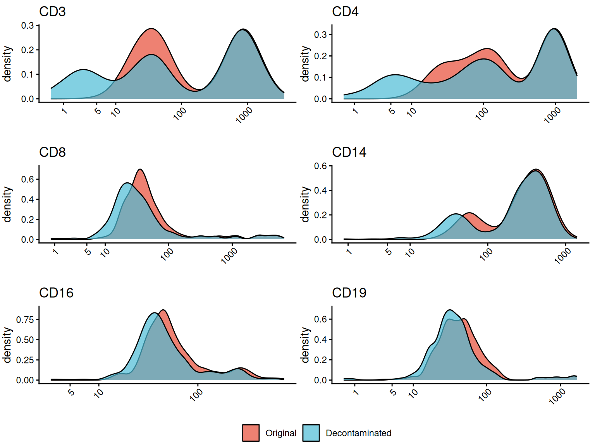
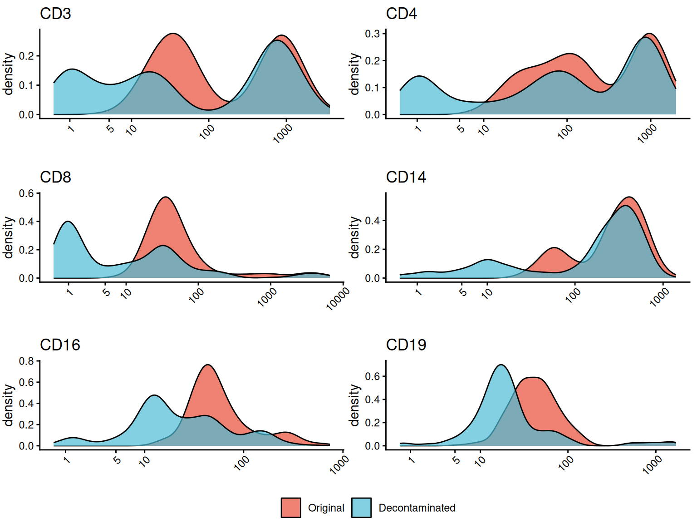
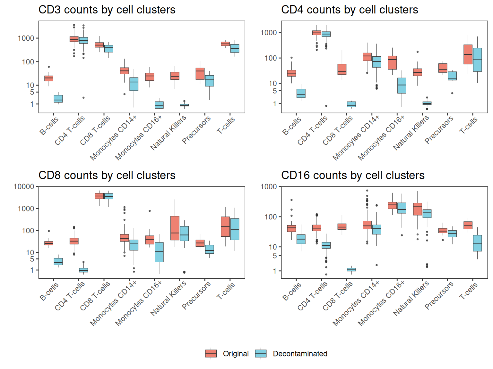

Decontamination of single cell protein expression data with DecontPro
Yuan Yin
Boston University School of MedicineJoshua Campbell
Boston University School of Medicinecamp@bu.edu
2026-11-23
Source:vignettes/decontPro.Rmd
decontPro.RmdIntroduction
CITE-seq and similar assays measure proteins on single cells with antibody-derived tags (ADTs): antibodies carrying a DNA barcode that is sequenced along with the cell’s RNA. Not every ADT count in a droplet comes from the proteins on its cell. Two kinds of contamination add counts:
- Ambient contamination. The cell suspension holds ambient material, including ADTs, that is captured in droplets along with the cells. These ADTs follow the profile of the whole suspension, so they show up in cells that don’t express the protein.
- Background. Many ADTs show a low, non-specific peak, even in cell types that lack the protein. Yin et al. (2024) found this background peak to be consistent across cell types, and similar in profile to “spongelets”: droplets that cell-calling software calls empty but that hold a medium level of ADTs. Its source isn’t known; debris from dissociation or dying cells are possible causes.
Left in, contamination blurs the difference between cells that express a protein and cells that don’t. DecontPro (Yin et al. 2024) is a Bayesian method that estimates and removes both kinds. It models each ADT count of a droplet as a mixture of three parts:
- Native: ADTs bound to the proteins of the droplet’s cell. Cells of the same type share a native profile.
- Ambient: one ambient profile, shared by all droplets, estimated from the ADT totals of the data or of empty droplets. How much of each droplet’s counts comes from it is estimated for each droplet.
- Background: a background level for each ADT, which can vary a little from droplet to droplet.
DecontPro fits the model with Stan’s variational inference, splits each count into the three parts in proportion to their estimated rates, and returns the native part as the decontaminated counts.
For a short overview of the package and of DecontX, its method for
RNA counts, see Getting started with decontX,
vignette("decontX", package = "decontX").
Installation
The decontX package, which contains DecontPro, can be installed from Bioconductor:
if (!requireNamespace("BiocManager", quietly = TRUE)) {
install.packages("BiocManager")
}
BiocManager::install("decontX")Then the package can be loaded in R using the following command:
To see the latest updates and releases or to post a bug, see our GitHub page at https://github.com/campbio/decontX.
Importing data
We use the cord blood CITE-seq data from the SingleCellMultiModal package. Only the ADT counts and the cell annotations are downloaded (about 0.3 MB).
library(SingleCellMultiModal)
# Download the ADT counts and the cell annotations
cordBlood <- CITEseq(
"cord_blood",
modes = c("scADT_Counts", "coldata_scRNAseq"),
dry.run = FALSE
)
# The ADT count matrix: one row per ADT, one column per droplet
allAdtCounts <- experiments(cordBlood)$scADT
dim(allAdtCounts)
#> [1] 13 7858The matrix holds 13 ADTs and 7,858 droplets. Every droplet is a called cell, one that cell-calling software such as CellRanger judged to contain a cell. DecontPro takes this filtered matrix, not the empty droplets.
Cell types
DecontPro needs the cell type of each droplet. It learns one native profile per cell type, so the labels should group cells whose proteins look alike. The cord blood data come with cell-type labels:
# The cell type of each droplet, in the order of the matrix columns
allCellTypes <- colData(cordBlood)[colnames(allAdtCounts), "celltype"]
# The number of droplets of each cell type
table(allCellTypes, useNA = "ifany")
#> allCellTypes
#> B-cells CD4 T-cells CD8 T-cells Monocytes CD14+ Monocytes CD16+
#> 340 3262 354 2411 143
#> Natural Killers Precursors T-cells <NA>
#> 1029 115 46 158DecontPro needs a label for every droplet. 158 droplets have none, so we keep the 7,700 labelled ones:
# Find the droplets that have a cell type
hasLabel <- !is.na(allCellTypes)
# Keep their counts and cell types
labelledCounts <- allAdtCounts[, hasLabel]
labelledCellTypes <- allCellTypes[hasLabel]To keep this vignette fast, we sample 500 droplets. Don’t subsample your own data: DecontPro estimates the ambient profile from all the droplets it is given, so a subsample, especially a biased one, can bias that estimate.
# Sample 500 droplets at random
set.seed(42)
sampledDroplets <- sample(ncol(labelledCounts), 500)
# The counts and cell types of the sampled droplets
adtCounts <- labelledCounts[, sampledDroplets]
cellTypes <- labelledCellTypes[sampledDroplets]
# The number of sampled droplets of each cell type
table(cellTypes)
#> cellTypes
#> B-cells CD4 T-cells CD8 T-cells Monocytes CD14+ Monocytes CD16+
#> 22 207 22 167 12
#> Natural Killers Precursors T-cells
#> 60 8 2The labels can be character strings, as here, integers or a factor.
With your own data, cluster labels work too: for example, Seurat’s
cluster identities can be passed as they are, with
Idents(seuratObject). Very fine clusters split a cell type
into small groups, each with its own native profile; broader cell types
are often more useful.
Running DecontPro
DecontPro takes the count matrix and the cell types:
# Decontaminate the counts, without printing Stan's progress
decontResult <- decontPro(adtCounts, cellTypes, verbose = FALSE)verbose = FALSE hides DecontPro’s messages and Stan’s
progress, which is long. If the fit fails, Stan’s output is shown
anyway.
The output
The result is a list:
# The elements of the result
names(decontResult)
#> [1] "parameters" "decontaminated_counts" "ambient_counts"
#> [4] "background_counts"-
parameters: the model’s estimates, described below. -
decontaminated_counts: the native part, the counts that come from the cell’s own proteins. -
ambient_counts: the ambient part. -
background_counts: the background part.
The three count matrices have one row per ADT and one column per droplet, with the row and column names of the input. Each count is split into the three parts, so they add up to the original counts:
# Add the three parts together
summedParts <- decontResult$decontaminated_counts +
decontResult$ambient_counts +
decontResult$background_counts
# Compare the sum with the original counts
all.equal(summedParts, adtCounts)
#> [1] TRUEThe share of all counts that DecontPro called ambient or background:
# Share of all counts called ambient
sum(decontResult$ambient_counts) / sum(adtCounts)
#> [1] 0.08551285
# Share of all counts called background
sum(decontResult$background_counts) / sum(adtCounts)
#> [1] 0.01165933decontResult$parameters holds:
-
delta_sd,background_sd: the values of the two priors used in the fit. -
r_est: the native profile of each cell type, with one row per cell type, named by its label, and one column per ADT. Each row sums to 1. -
p_est: the ambient profile, the share of each ADT among ambient counts. It sums to 1. -
delta_est: for each ADT (row) in each droplet (column), the weight of the ambient profile in the part of the counts that isn’t background; the native profile gets the rest (1 minus this weight). -
delta_mean_est: for each droplet, the mean level ofdelta_est. -
background_est: for each ADT (row) in each droplet (column), the background as a proportion of the droplet’s total count. -
background_mean_est: for each ADT, the mean level ofbackground_est.
The ADTs and droplets of these estimates carry the row and column names of the counts, so a droplet’s values can be looked up by its barcode.
Tuning the priors
The density of each ADT before and after decontamination shows whether the results are reasonable. Many ADTs have two peaks: a low one from cells that don’t express the protein, whose counts are mostly contamination, and a high one from cells that do. Decontamination should move the low peak toward zero and leave the high peak in place.
# Density of six ADTs before and after decontamination
plotDensity(
adtCounts,
decontResult$decontaminated_counts,
c("CD3", "CD4", "CD8", "CD14", "CD16", "CD19")
)
With the default priors, little is removed here: most of the low CD8 peak stays where it was, and only part of the low CD3 and CD4 peaks moves toward zero.
A prior is the model’s assumption about a value before it sees the data. Two priors, each a standard deviation, control how much DecontPro removes:
-
deltaSd(default 2e-5): how much the ambient level can vary from one ADT to another within a droplet. -
backgroundSd(default 2e-6): how much the background level of an ADT can vary from one droplet to another.
Larger values let DecontPro assign more of each count to contamination; smaller values remove less. We tested the defaults on datasets of 5,000 to 10,000 droplets and 10 to 30 ADTs, and the results were reasonable. A smaller or a more contaminated dataset may need larger priors. Our 500 droplets are a small dataset, so we try priors 5 times the defaults:
# Decontaminate again with priors 5 times the defaults
tunedResult <- decontPro(
adtCounts,
cellTypes,
deltaSd = 1e-4,
backgroundSd = 1e-5,
verbose = FALSE
)
# Density of the same ADTs after the second fit
plotDensity(
adtCounts,
tunedResult$decontaminated_counts,
c("CD3", "CD4", "CD8", "CD14", "CD16", "CD19")
)
Now most of the low CD8 peak, and more of the low CD3 and CD4 peaks, move toward zero, while the high peaks stay. These results are close to what the default priors give on all 7,700 labelled droplets. We fitted those once, outside this vignette: for these 500 droplets, the counts decontaminated here and those from the fit on all droplets have a correlation of 0.99 on a log scale.
CD4 is a useful check: it has three peaks, and the middle one comes from monocytes, which express some CD4. Only the lowest peak should move toward zero. The middle peak gets a little lower here but stays in place. Priors that are too large remove real signal: at 10 times the defaults, the middle CD4 peak is pushed down toward zero, and the high CD14 peak of the monocytes shrinks.
The decontaminated counts can also be compared within each cell type:
# Counts of four ADTs in each cell type, before and after decontamination
plotBoxByCluster(
adtCounts,
tunedResult$decontaminated_counts,
cellTypes,
c("CD3", "CD4", "CD8", "CD16")
)
Each protein should stay high in the cell types that express it and fall in the others. Here CD3 stays high in the T cells and falls close to zero in B cells and natural killer cells; CD8 stays high in CD8 T cells and natural killer cells and falls in B cells and CD4 T cells.
Cell types with only a few droplets in this sample, such as T-cells (2 droplets) and Precursors (8), are estimated poorly: their native profiles rest on very few droplets, and their results differ the most from the fit on all droplets. This is another reason to run DecontPro on all of your droplets.
With empty droplets
By default, DecontPro estimates the ambient profile from the filtered
matrix. If you have the raw matrix, which holds every droplet barcode,
you can estimate it from the empty droplets instead, with the
background argument. Only the total of each ADT across
those droplets is used, so background sets the ambient
profile and nothing else.
The cord blood data don’t include the raw matrix, so this code is a
template. For data processed with CellRanger, the raw matrix is in the
"outs/raw_feature_bc_matrix/" subfolder of each sample
directory, and singleCellTK imports it when the dataType
argument is set to “raw”. Replace the path with your own sample
directory and cellTypes with your own labels:
library(singleCellTK)
# Import the filtered matrix (the called cells) and the raw matrix.
# Use the same sample directory for both, so the barcodes match.
sceFiltered <- importCellRanger(
sampleDirs = "path/to/sample1/",
dataType = "filtered"
)
sceRaw <- importCellRanger(
sampleDirs = "path/to/sample1/",
dataType = "raw"
)
# Keep the ADT rows of each matrix
isAdtFiltered <- rowData(sceFiltered)$feature_type == "Antibody Capture"
adtFiltered <- counts(sceFiltered)[isAdtFiltered, ]
isAdtRaw <- rowData(sceRaw)$feature_type == "Antibody Capture"
adtRaw <- counts(sceRaw)[isAdtRaw, ]
# Estimate the ambient profile from the empty droplets
emptyDropletResult <- decontPro(
adtFiltered,
cellTypes,
background = adtRaw
)Like decontX(), DecontPro removes the called cells from
background itself: droplets whose barcodes (column names)
are also in the counts are dropped, so the raw matrix can be given as it
is. If either matrix has no column names, nothing is removed and
DecontPro warns, so give it the empty droplets only. It also warns when
no barcode matches but background has many droplets with as
many counts as a typical cell, which happens when the two matrices name
the same barcodes differently, for example with and without a sample
prefix. All of background goes into one ambient profile,
and its barcodes are matched across all droplets. With several samples,
the barcodes must be unique across samples, for example with a sample
prefix in both matrices; otherwise a barcode that is a cell in one
sample removes an empty droplet with the same barcode in another.
When both matrices have row names, the ADTs are matched by name: ADTs
in background that aren’t in the counts are dropped, and
every ADT of the counts must be in background. Without row
names, the rows must be in the same order.
Runtime and reproducibility
The run time grows with the number of ADTs times the number of droplets. Each fit in this vignette, 13 ADTs in 500 droplets, takes 5 to 10 seconds on a laptop; a fit on all 7,700 labelled droplets takes about 2 minutes. Stan writes a temporary file during the fit, which DecontPro deletes when the fit ends.
Stan’s fit is random. DecontPro sets Stan’s seed with the
seed argument (default 12345), so the same counts, cell
types, priors and seed give the same results. iter (default
50000) is the maximum number of iterations; the fit usually stops
earlier, when it converges.
Frequently asked questions
Can I give DecontPro the raw matrix with every droplet?
No. DecontPro models each droplet as a cell of a given type, so the
counts must be the filtered matrix, with the called cells only. The raw
matrix can still help, through the background argument,
which takes it as it is (see With empty
droplets).
Citing DecontPro
If you use DecontPro in your work, please cite:
Yin Y, Yajima M, Campbell JD (2024). Characterization and decontamination of background noise in droplet-based single-cell protein expression data with DecontPro. Nucleic Acids Research, 52(1), e4. doi:10.1093/nar/gkad1032
citation("decontX") prints this reference and the one
for DecontX.
Session information
sessionInfo()
#> R version 4.6.1 (2026-06-24)
#> Platform: x86_64-pc-linux-gnu
#> Running under: Ubuntu 24.04.5 LTS
#>
#> Matrix products: default
#> BLAS: /usr/lib/x86_64-linux-gnu/openblas-pthread/libblas.so.3
#> LAPACK: /usr/lib/x86_64-linux-gnu/openblas-pthread/libopenblasp-r0.3.26.so; LAPACK version 3.12.0
#>
#> locale:
#> [1] LC_CTYPE=en_US.UTF-8 LC_NUMERIC=C
#> [3] LC_TIME=en_US.UTF-8 LC_COLLATE=en_US.UTF-8
#> [5] LC_MONETARY=en_US.UTF-8 LC_MESSAGES=en_US.UTF-8
#> [7] LC_PAPER=en_US.UTF-8 LC_NAME=C
#> [9] LC_ADDRESS=C LC_TELEPHONE=C
#> [11] LC_MEASUREMENT=en_US.UTF-8 LC_IDENTIFICATION=C
#>
#> time zone: Etc/UTC
#> tzcode source: system (glibc)
#>
#> attached base packages:
#> [1] stats4 stats graphics grDevices utils datasets methods
#> [8] base
#>
#> other attached packages:
#> [1] SingleCellMultiModal_1.25.3 MultiAssayExperiment_1.39.1
#> [3] SummarizedExperiment_1.43.0 Biobase_2.73.2
#> [5] GenomicRanges_1.65.4 Seqinfo_1.3.2
#> [7] IRanges_2.47.5 S4Vectors_0.51.10
#> [9] BiocGenerics_0.59.13 generics_0.1.4
#> [11] MatrixGenerics_1.25.0 matrixStats_1.5.0
#> [13] decontX_1.11.39 BiocStyle_2.41.0
#>
#> loaded via a namespace (and not attached):
#> [1] DBI_1.3.0 httr2_1.3.0
#> [3] gridExtra_2.3.1 inline_0.3.21
#> [5] rlang_1.3.0 magrittr_2.0.5
#> [7] otel_0.2.0 compiler_4.6.1
#> [9] RSQLite_3.53.3 loo_2.10.1
#> [11] png_0.1-9 systemfonts_1.3.2
#> [13] vctrs_0.7.3 combinat_0.0-9
#> [15] SpatialExperiment_1.23.0 crayon_1.5.3
#> [17] pkgconfig_2.0.3 fastmap_1.2.0
#> [19] magick_2.9.1 dbplyr_2.6.0
#> [21] XVector_0.53.0 labeling_0.4.3
#> [23] rmarkdown_2.32 ragg_1.5.2
#> [25] purrr_1.2.2 bit_4.6.0
#> [27] xfun_0.62 cachem_1.1.0
#> [29] jsonlite_2.0.0 blob_1.3.0
#> [31] DelayedArray_0.39.8 parallel_4.6.1
#> [33] R6_2.6.1 bslib_0.12.0
#> [35] RColorBrewer_1.1-3 StanHeaders_2.39.1
#> [37] MCMCprecision_0.4.2 parallelly_1.48.0
#> [39] jquerylib_0.1.4 Rcpp_1.1.2
#> [41] bookdown_0.48 rstan_2.32.7
#> [43] knitr_1.52 future.apply_1.21.0
#> [45] BiocBaseUtils_1.15.1 Matrix_1.7-6
#> [47] tidyselect_1.2.1 abind_1.4-8
#> [49] yaml_2.3.12 codetools_0.2-20
#> [51] curl_8.1.0 listenv_1.1.0
#> [53] pkgbuild_1.4.8 lattice_0.23-1
#> [55] tibble_3.3.1 withr_3.0.3
#> [57] KEGGREST_1.53.6 S7_0.2.2
#> [59] evaluate_1.0.5 future_1.80.0
#> [61] desc_1.4.3 RcppParallel_6.2.1
#> [63] BiocFileCache_3.3.3 ExperimentHub_3.3.2
#> [65] Biostrings_2.81.9 filelock_1.0.3
#> [67] pillar_1.11.1 BiocManager_1.30.27
#> [69] sp_2.2-4 BiocVersion_3.24.0
#> [71] ggplot2_4.0.3 rstantools_2.7.1
#> [73] scales_1.4.0 globals_0.20.0
#> [75] glue_1.8.1 tools_4.6.1
#> [77] AnnotationHub_4.3.3 fs_2.1.0
#> [79] dotCall64_1.2 grid_4.6.1
#> [81] QuickJSR_1.11.0 AnnotationDbi_1.75.2
#> [83] SingleCellExperiment_1.35.2 patchwork_1.3.2
#> [85] cli_3.6.6 rappdirs_0.3.4
#> [87] textshaping_1.0.5 spam_2.11-4
#> [89] S4Arrays_1.13.3 dplyr_1.2.1
#> [91] gtable_0.3.6 sass_0.4.10
#> [93] digest_0.6.39 progressr_1.1.0
#> [95] SparseArray_1.13.5 rjson_0.2.23
#> [97] htmlwidgets_1.6.4 SeuratObject_5.4.0
#> [99] farver_2.1.2 memoise_2.0.1
#> [101] htmltools_0.5.9 pkgdown_2.2.1
#> [103] lifecycle_1.0.5 httr_1.4.9
#> [105] bit64_4.8.6